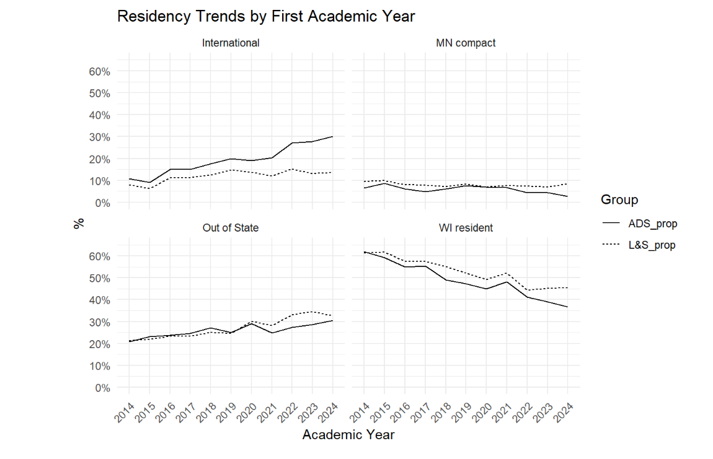

Hi there! I'm Kiet, a junior at the University of Wisconsin–Madison, majoring in Data Science
with minors in Computer Sciences and Economic Analytics. I’m passionate about using data to drive innovation and have applied my skills through internships in AI development, data analytics, and market research.
Lately, I’ve focused on building tools that support investment analysis, automate workflows, and
extract actionable insights from complex data.

Welcome to my projects!
Check out my work to see how I apply data analytics to solve real-world problems.

Built a real-time meeting assistant using Azure OpenAI, Cognitive Services, and Streamlit to transcribe, analyze, and summarize private equity calls.
Developed a Python-based quantitative value investing strategy using IEX Cloud API and Pandas for data parsing and stock analysis.
Designed a sustainability-driven strategy for Costco, proposing a Green+ membership program with cashback, subsidies, and carbon tracking. Projected $107M in revenue uplift and 7.8M metric tons CO₂ eliminated by 2025.

Conducted SQL-based data sourcing and R-driven demographic analysis for 70,000 students, aiding Academic Deans on underrepresented groups.

Explored the impact of higher-ed course design using R and SQL, and managed data in Google BigQuery. Focused on identifying the five most important components for learning analytics.
Utilized Tableau to perform churn analysis on a 29-variable telecom dataset, driving actionable insights for retention strategies.

Assisted in automatic evaluation of open surgery skills using depth camera.
Predicted customer churn using Python, Pandas, scikit-learn, and Spark, from data exploration to model deployment.

Developed a Python API library for Webots to simulate VEX IQ robots, enabling 150+ students to access advanced robotics simulations without physical robots.